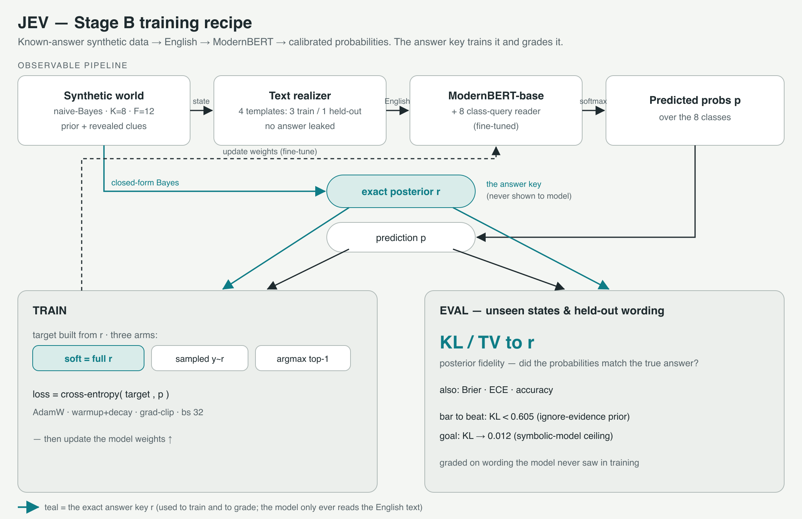
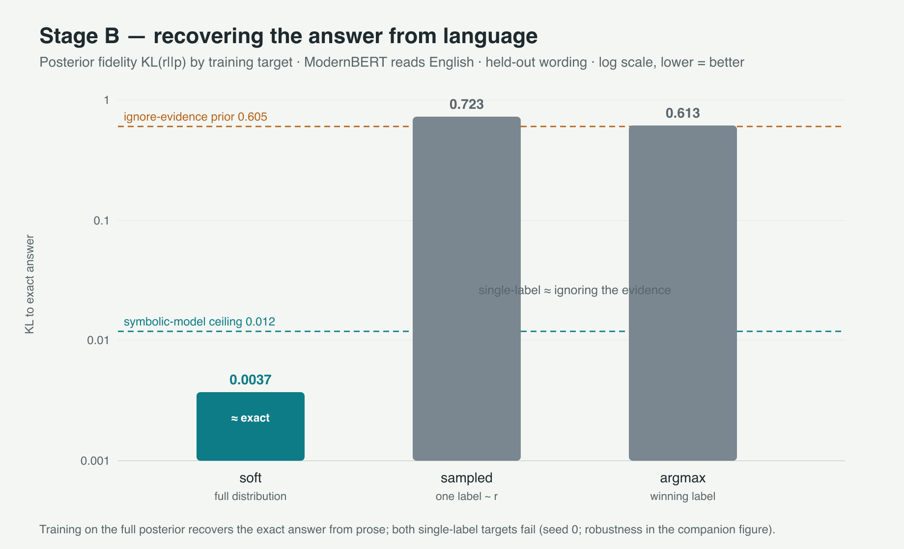
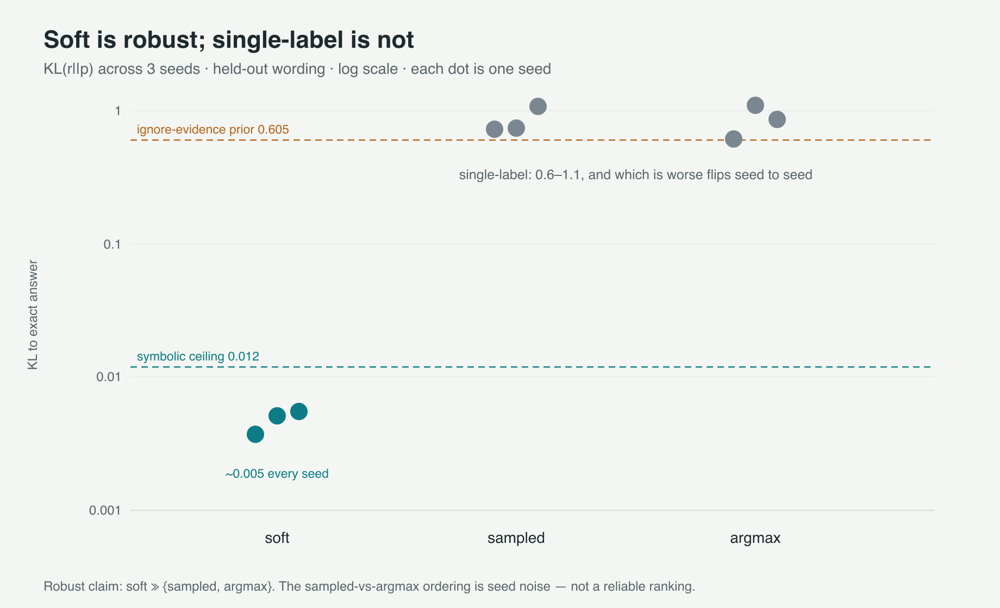
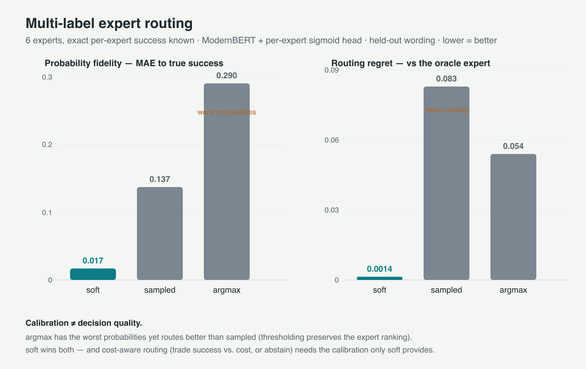
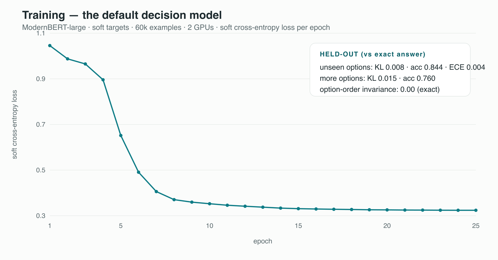
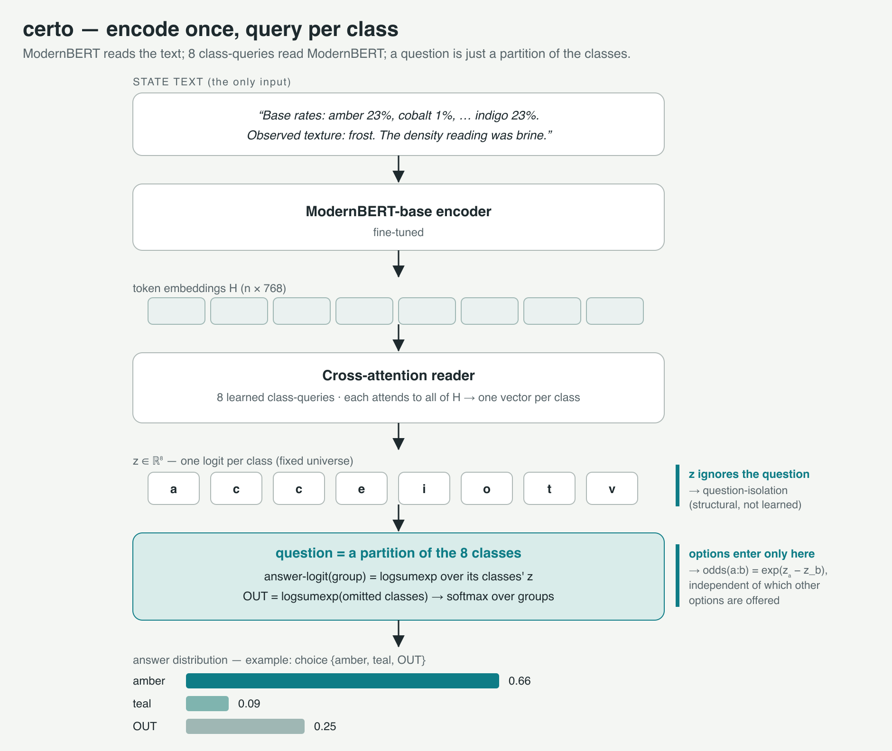

How certo builds decision models whose confidence you can trust — the method, the experiments, what we found, and where it breaks.
A decision model is only useful if its confidence is trustworthy. How you train it decides whether that's true.
We build small models that read a situation and some options and return a probability for each — "route to billing, 0.86" — without generating any text. Training them on the full probability distribution (not just the single "right" answer) makes the confidence honest by construction. We prove this in worlds we generate ourselves, where the exact answer is known, so we can grade the probabilities against the truth — something you can never do on real data. A pretrained language model trained this way recovers the exact answer from plain English, keeps its calibration on wording it never saw, and even handles options it was never trained on.
Picking the answer is easy. Reporting how sure you are, correctly, is not.
Think of a weather forecaster. Saying "it will rain" is a decision. Saying "70% chance" is a calibrated statement only if, across all the days she says 70%, it actually rains about 70 of 100 times. That property — the number matching reality — is what lets you act on it: carry an umbrella above 60%, cancel the picnic above 90%.
A decision model earns its keep the same way. If it says "route to billing, 0.86" and the 0.86 is trustworthy, you can build real rules: escalate to a human when it's under 0.8, or trade quality against cost when several routes are plausible. If the number is inflated, it's worse than useless — it looks confident and it's wrong.
You can't measure whether confidence is honest on real data — because you never know the true odds. So we build worlds where we do.
To check the forecaster, you need many days and the actual weather. To check a model's "70%" on a single case, you'd need to know the true probability of that case — which real data never gives you. Our fix: generate the data from a small probabilistic world whose exact answer is computable. We write the exam and the answer key. Now we can grade not just whether the model picked right, but how close its whole probability distribution is to the truth.
Concretely, each example has some base rates and a few observed clues; from those, the exact probability of each answer follows by Bayes' rule. We then describe the situation in plain English and ask the model to recover those probabilities — and we score it against the exact answer.
Generate a case with a known answer → describe it in English → have the model read it and output calibrated probabilities → train against the true distribution → grade against the exact answer.

The one training choice that matters is the target. Three ways to set it:
Soft targets are a "proper scoring rule": the loss is smallest exactly when the model's probabilities equal the truth. That's the calibration-by-construction lever.
A pretrained language model (ModernBERT) trained on soft targets recovers the exact probabilities from prose to within a whisker — and it does so on wording it never saw in training, which means it learned to reason about the situation, not memorize phrasings. Training on a single label (winner-only or sampled) fails badly — landing near "ignore the evidence and guess the base rate."

Across repeated runs, soft is consistently near-perfect and the single-label targets consistently fail. (Which single-label target is worse flips run to run — they're both just bad, so we don't rank them.)

This is the headline. With a small reference model that can represent the answer exactly, training on winner-only labels gives almost the same accuracy as soft — but its probability error is roughly a thousand times larger. The decision looks fine; the confidence is a lie. (On bigger models, winner-only training also starts to hurt accuracy, not just confidence.)
We built a harder world where clues carry no information alone — only their combination identifies the answer (like a lock that needs two dials together). A model that adds up clues one at a time provably can't solve it; the model that reads them jointly does, recovering the exact answer where the additive rule is stuck near "ignore the evidence."
For a general decision model, the options can't be fixed in advance — they arrive at request time, described in words. We trained the model to score options from their descriptions, and tested it on options, names, wording, and counts it had never seen. It generalizes: it learned the rule ("match the evidence to each option's description"), not a fixed list of classes. Calibration is somewhat looser here than in the fixed-option setting — reading arbitrary descriptions is a harder job — but it holds.
We tried a routing task: several experts, each with an independent chance of succeeding; pick the best. Here calibration and decision quality come apart cleanly.

The standard patch for overconfidence is "temperature scaling" — divide the scores by a constant fit afterward. It removes most of the winner-only model's overconfidence, but the repaired probabilities are still far worse than a model trained soft from the start. Overconfidence is partly a uniform sharpness (fixable) and partly per-case error (not fixable by one knob). Better to train it right than to patch it.
The default model is a ModernBERT-large decision model, trained on soft targets. It generalizes to options it never saw, and — importantly — it fails safely where it shouldn't be trusted.

Real outputs from the model (predicted probabilities next to the exact answer where we can compute it):
| case | predicted | exact | |
|---|---|---|---|
| clear evidence | Dune 1.00 | Dune 1.00 | confident & correct |
| ambiguous evidence | Isle 0.49 · Fen 0.48 · Shoal 0.02 | 0.49 · 0.49 · 0.02 | calibrated spread → abstains |
| options reversed | identical per-option probabilities | order-invariant | |
| real prose ("charged twice, want a refund") | ≈ uniform → abstains | out of distribution | |
Read the situation once; score each option from its own description; combine independently.

The model is a small pretrained text encoder plus a lightweight scoring head. It's non-generative: it produces typed probabilities in one pass, not text you have to parse. It supports four output shapes — a single choice (with a "none of these" option), yes/no, an ordered score, and independent yes/no across several options (for routing).
The next version aims at a more general decision model: a corpus that mixes rules we generate ourselves (the real breadth engine), our known-answer worlds, and a careful selection of public decision datasets — with strict provenance, licensing, and leakage controls, and evaluation that holds out entire rule families, not just wording. A larger backbone is on the table for the knowledge-heavy tasks. The small model stays the default; bigger is an option, not a requirement.
Related work: the runtime-option classifier family (GLiClass, GLiNER, and open decision-model rebuilds) established the mechanism of scoring options in one pass; certo's contribution is calibration by construction on top of it.
python datagen.py selftest # verify the synthetic world (exact answers) python train.py compare # target types, graded on distance to the exact answer python train_text.py run --arm soft # recover the answer from English python train_generic.py run --arm soft # generic runtime-option model
Code: github.com/AltSlate-Labs/certo · Dataset: certo-synthetic-decisions